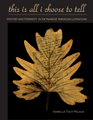

An introduction to the themes of a still-evolving American ethnic literature
An introduction to the themes of a still-evolving American ethnic literature


 An introduction to the themes of a still-evolving American ethnic literature
An introduction to the themes of a still-evolving American ethnic literature

|  |
This Is All I Choose to TellHistory and Hybridity in Vietnamese American LiteratureIsabelle Thuy Pelaudpaper EAN: 978-1-43990-217-2 (ISBN: 1-4399-0217-8) |
"Immediately indispensable, exactingly researched, and beautifully written, This Is All I Choose to Tell is both an introduction to and a road map for an expansive analysis of Vietnamese American literature. By carefully and judiciously introducing her personal story and journey from immigrant to academic, Pelaud has created a work that is both necessary and brave."
—Monique Truong, author of The Book of Salt and Bitter in the Mouth
In the first book-length study of Vietnamese American literature, Isabelle Thuy Pelaud probes the complexities of Vietnamese American identity and politics. She provides an analytical introduction to the literature, showing how generational differences play out in genre and text. In addition, she asks, can the term Vietnamese American be disassociated from representations of the war without erasing its legacy?
Pelaud delineates the historical, social, and cultural terrains of the writing as well as the critical receptions and responses to them. She moves beyond the common focus on the Vietnam war to develop an interpretive framework that integrates post-colonialism with the multi-generational refugee, immigrant, and transnational experiences at the center of Vietnamese American narratives.
Her readings of key works, such as Andrew Pham's Catfish and Mandala and Lan Cao's Monkey Bridge show how trauma, race, class and gender play a role in shaping the identities of Vietnamese American characters and narrators.
"Pelaud has produced the first book specifically devoted to Vietnamese American literature. The poignancy of this benchmark is not to be missed. Her book is a timely contribution to the field of Asian American literary studies and to the emergent subfield of Vietnamese American literary and cultural studies. She makes Vietnamese American literature readily visible for readers who are interested in finding an anchor through which to wrestle with this corpus of cultural work. I have a deep appreciation for what Pelaud has done."
—James K. Lee, Associate Professor of Asian American Studies, University of California at Santa Barbara, and the author of Urban Triage: Race and the Fictions of Multiculturalism
"Pelaud provides the first comprehensive introduction and overview of Vietnamese American literature, a largely ignored and under-studied area within the larger field of Asian American literature.... Throughout, Pelaud's writing is clear and her analysis sharp. This accessible book is a must read. Summing Up: Highly recommended."
— Choice
"This Is All I Choose to Tell is timely, arriving at a moment when the interest in literature from a global perspective has taken as a top priority the relationship between minor and major literatures.... This Is All I Choose to Tell establishes a starting point for defining Vietnamese American literature as a field with a history, and compels us to think about how to maintain its specificity and autonomy while understanding its contingent nature."
— Journal of Vietnamese Studies
"[T]his is a groundbreaking book regarding Vietnamese American issues in their emerging literature."
— Journal of Southeast Asian American Education & Advancement
"[A] sensitive study of Vietnamese American literature.... This Is All I Choose to Tell [is a] critically valuable intervention within the field of Vietnamese American studies, not merely within contexts of the Vietnam War and its memorial afterlife, but also within larger debates in Asian American representations related to ethnicity, immigration, gender, class, and the continual reconfiguration of recently (dis)integrated individual, political, and national selves."
—Journal of American Studies
"The first book-length study of Vietnamese American literature, This Is All I Choose to Tell is unquestionably an essential contribution to the field of Asian American studies.... Pelaud provides scholars and teachers alike with an impressive road map to this burgeoning body of literature, expanding on rigorous literary surveys.... As evidenced by her faithful, meticulous readings, Pelaud is adamant we appreciate the personal commitment needed to transform contradictory positions into artistic products."
— Journal of Asian American Studies
"This Is All I Choose to Tell represents the first book-length study of Vietnamese American literature to date, providing in the first half of the book an overview of the historical-political context of Vietnamese American literature and, in the second half, close readings and theoretical interpretations of specific literary texts.... The title of Pelaud’s book...beautifully encapsulates the way in which Vietnamese American writers have found ways to navigate the complex ethical terrain of disclosure and nondisclosure, of historical witnessing and appropriation, of therapeutic telling and articulate silence."
—Contemporary Women's Writing
Preface
Acknowledgments
Introduction
Part I: Inclusion
1. History
2. Overview
3. Hybridity
Part II: Interpretation
4. Survival
5. Hope and Despair
6. Reception
Conclusion
Notes
Bibliography
Index
 | Isabelle Thuy Pelaud is an Associate Professor of Asian American Studies at San Francisco State University, and founder of the Diasporic Vietnamese Artists Network (DVAN). |
Literature and Drama
Asian American Studies
Cultural Studies
Asian American History and Culture, edited by K. Scott Wong, Linda Trinh Võ, and Cathy Schlund-Vials.
Founded by Sucheng Chan in 1991, the Asian American History and Culture, series has sponsored innovative scholarship that has redefined, expanded, and advanced the field of Asian American studies while strengthening its links to related areas of scholarly inquiry and engaged critique. Like the field from which it emerged, the series remains rooted in the social sciences and humanities, encompassing multiple regions, formations, communities, and identities. Extending the vision of founding editor Sucheng Chan and emeriti editor Michael Omi and David Palumbo-Liu, series editors K. Scott Wong, Linda Trinh Võ, and Cathy Schlund-Vials continue to develop a foundational collection that embodies a range of theoretical and methodological approaches to Asian American studies.
© 2015 Temple University. All Rights Reserved. This page: http://www.temple.edu/tempress/titles/2076_reg.html.